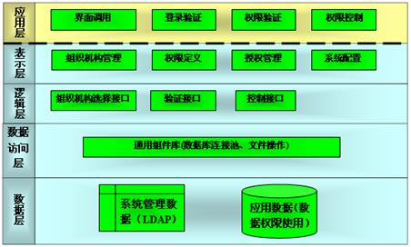
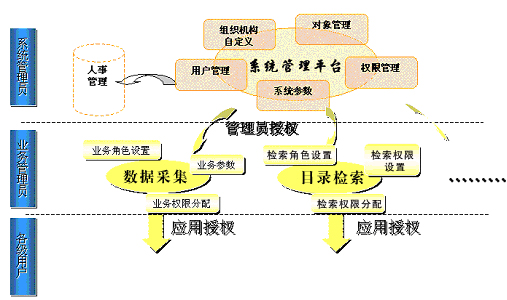
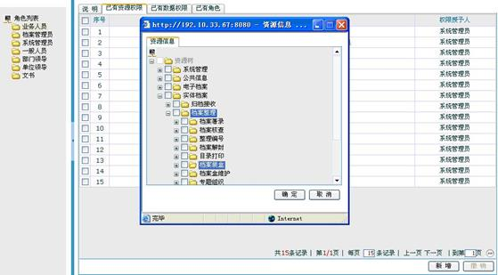

系统管理平台（CES Sysman）
系统管理平台是所有应用系统的基础，主要完成组织机构管理、用户管理、资源管理、授权管理和权限控制等与权限有关的管理功能，是整个信息系统的关键和基础部分，其框架结构如下：

系统自下而上共分为5层：
- 数据层：包括系统管理数据和应用数据（主要指应用权限数据）；
- 数据访问层：通过通用组件的设计，采用构件化的思想处理数据库连接与文件操作，提高运行效率；
- 逻辑层：实现系统管理平台与应用系统的接口。包括组织机构选择接口、权限验证接口、权限控制接口等；
- 表示层：实现组织机构管理、权限定义、授权管理与系统配置等功能，并调用逻辑层接口实现对数据的操作；
- 应用层：通过对逻辑接口的封装，实现部分系统管理的应用组件，其它应用系统可以以组件的方式集成系统管理平台。
按照传统的实施模式，每个系统建立一套独立的用户管理和权限管理，往往造成用户信息重复输入、权限分别设定，系统管理员很难进行维护，系统的扩展性很低，安全方面也造成很多漏洞。为此，我们为客户提出一个整体解决方案，将所有应用系统都建立在一个完整的用户和权限管理的平台基础之上。
我司的系统管理平台具有如下方面的特性：
用户应该深有体会，很多应用软件的实施往往因为组织机构的改变而遭遇淘汰，系统管理平台提供组织机构自定义功能，能满足各种变化对应用的需求而不需要进行二次开发投入。
目前应用软件系统的管理一般都是集中由系统管理员统一负责管理，而信息系统的建设牵涉到很多直属单位或部门的信息管理并且各个单位内部的组织机构各不相同，每个部门有自己的业务流程，这样牵涉到的部门、业务逻辑多且繁杂，按照传统计算机系统的管理机制是无法完成如此复杂的权限管理、机构设置和业务定义的，我们提出分级管理的思想就是为了解决这一问题。将系统管理与业务管理分离（如图所示），各负其责。

系统将在对本系统业务需求进行详细分析的基础上定义系统的角色，角色的维护由系统管理员完成。
系统除了提供角色等授权外，还提供同权拷贝、加权赋予等多种灵活方式，大大简化授权过程。
系统管理平台和档案系统集成的实例界面如下（设置资源权限，控制角色可访问功能模块）：

采用系统管理平台，能为用户带来以下几方面的好处：
- 1. 实现各级用户功能权限的集中统一管理。系统管理员随时增加、删除、授予、收回所要控制的权限；
- 2. 提供单点登录功能，对各系统的用户信息进行集中管理，并统一控制用户的登录操作；
- 3. 提供临时授权、到期收回功能，确保权限不扩散；
- 4. 提供会话管理、账号冻结、用户数限制、口令限时修改功能，保证合法用户账号的安全；
- 5. 初始化定义领导、业务人员、查档人员、档案管理员等角色，减轻系统管理员的负担；
- 6. 同时采用多种权限管理方式，简化管理员授权工作；
- 7. 提供多种权限控制方式以及平台应用组件，轻松实现与应用系统的集成；
- 8. 资源权限和数据权限并存，对操作控制的同时保证信息数据的安全；
- 9. 和应用安全平台、工作流平台以及其它应用系统无缝集成，相互支持，共同保证系统的稳定和安全，并为系统的一次性登录奠定良好的基础；
- 10. 支持用户权限数据的数据库与LDAP两种存储方式；
- 11. 灵活的接口设计与自由的集成方式，预留和其它系统的接口。